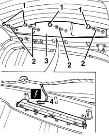
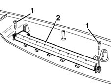
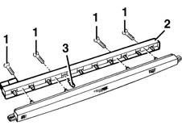

5550D16 third stop light - r+r
- Path
- Procedures > 55 ELECTRICAL EQUIPMENT > 5550 WARNING AND MANOEUVRING INDICATORS > 5550D brake and reversing lights > 5550D16 third stop light - r+r
- Kind
- repair procedure (removal / refitting; the operation number is the code)
- Applies to
- all engines; all production periods
- Interactive page
- https://sloeber94.github.io/elrnDB-fMltpl/en/#/2891955
Applies to: all engines; all production periods
 Removing
Removing
 Refitting
Refitting1. Open the tailgate and remove the covers.
2. Undo the bolts.
3. Move the top moulding over slightly.
4. Disconnect the connector on the third stop light.
 | Name | Connector |
|---|---|---|
4 | Additional tail-ight ('third brake light') |

Applies to: all engines; all production periods
1. Undo the bolts.
2. Remove the third brake light.

Applies to: all engines; all production periods
If necessary, replace the bulbs, proceeding as follows.
1. Undo the bolts.
2. Remove the bulb holder.
3. Remove the bulbs.
(Press fit)

Applies to: all engines; all production periods
Refitting
RemovingCheck that the third brake light and the bulbs are not damaged.
If removed previously, insert the bulbs in the bulb holder and refit the bulb holder fixing it using the bolts.
Position the light and fix it using the bolts.
Connect the electrical connection to the light cluster.
Fit the top moulding and tighten its bolts.
Fit the covers.
Check the operation of the third brake light.